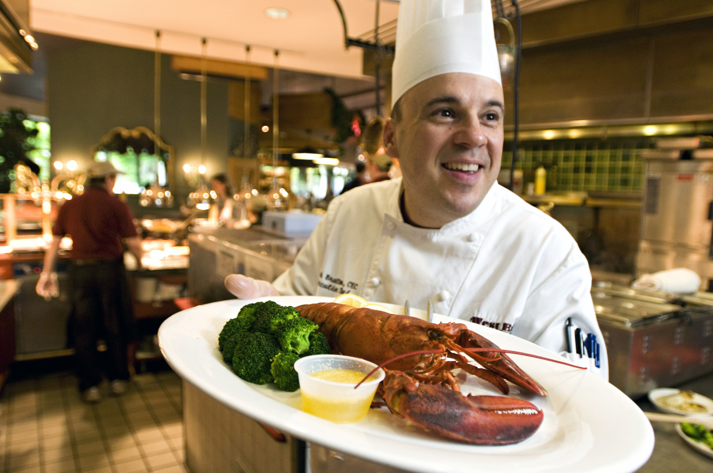
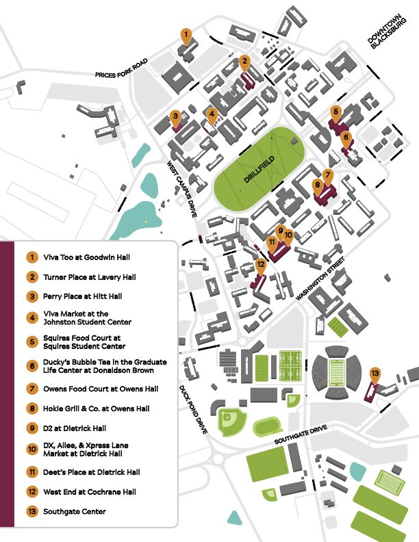

Getting Food
A guide to dining on and off campus
If you're a hungry Hokie, consider yourself in luck!
With over 50 dining options and campus food ranked #3 in the United States, you'll have no shortage of amazing places to eat.
Whether you're looking for a full meal, a quick snack, or a coffee between classes, Virginia Tech offers a wide variety of dining choices across campus.
Below is a list of major dining locations and the food options available at each:

Dining Halls and Food Courts
| Dining Hall | Resturants and Shops | Type |
|---|---|---|
| Dietrick Hall | D2, Deet's Place, DX, Xpress Lane Market, and Futurebites | Buffet, Market, Grab-and-Go, Café |
| GLC | Ducky's at Graduate Life Center | Specialty Drinks |
| Hokie Grill at Owens Hall | Chick-Fil-A, Choolaah, Dunkin' Donuts, Pizza Hut | Food Court, Fast Casual |
| Owens Food Court at Owens Hall | Ciotola, Dish, Franks, Freshens, Garden, Pop's, Sweets, Tazon, Variabowl, Wan | Food Court, Café, Grab-and-Go |
| Perry Place at Hitt Hall | AMP Coffee Bar, Addison's Provisions, Chick-Fil-A, Fresh and Feta, Rambutan, Smoke, Solarex, Trax, Veloce | Food Court, Café, Grab-and-Go |
| Squires Food Court at Squires Student Center | Burger '37, Corner '24 | Fast Casual, Café, Grab-and-Go |
| Turner Place at Lavery Hall | 1872 Fire Grille, Atomic Pizzeria, Bruegger's Bagels, Dolce e Caffe, Jamba, Origami, Qdoba, Soup Garden | Fast Casual, Café, Grab-and-Go |
| Johnston Student Center | Viva Market | Market, Grab-and-Go |
| Goodwin Hall | Viva Too | Market, Grab-and-Go |
| West End at Cochrane Hall | Blend, Fighting Gobbler, JP's Chop House, Leaf and Ladle, Rosso, Seven70 | Food Court, Café, Market, Specialty Dining |
Many dining halls feature Grab & Gobble, a grab-and-go option with prepackaged items such as sandwiches, salads, snacks, and drinks.
Special Menus
Dining Services regularly hosts special events and limited-time menus throughout the semester.
Check the Dining Services website for current events and updates!
Finding Dining
But, you might be wondering...
Where do you even start?
After all, campus is huge, and with so many dining options, it can be hard to know where everything is.
Fortunately, Dining Services provides an official dining map each year to help you find your way:

You can also view it on their website: The 2026 Virginia Tech Dining Map.
Coffee
Being a college student involves drinking copious amounts of coffee, so here is where to find some of the best spots on and off campus!
On Campus
- AMP Coffee Bar
- Dolce e Caffè
- Deet’s Place
- Dunkin’
- Starbucks
Off Campus
- Bollo's
- Coffeeholics
- Mill Mountain
- Lighthouse
Ordering
Most dining halls at Virginia Tech utilize Grubhub for mobile ordering.
You can order ahead, skip the line, and pick up your food when it’s ready. This is especially helpful during lunch and dinner rushes.
Getting started is simple:
- Download the Grubhub app
- Go to My Grubhub, Settings, Campus Dining
- Confirm your campus (Virginia Tech)
- Start browsing menus and ordering
If you have any food allergies or dietary restrictions, you can note that in the order instructions section before placing an order.
Paying for Dining
2026 Meal Plan Offerings
| Meal Plan | Price Per Semester | Flex Dollars | Meals Per Week |
|---|---|---|---|
| Minor Flex Plan | $1,559 | $624 | 5-6 Meals |
| Major Flex Plan | $2,934 | $1,062 | 10 Meals |
| Mega Flex Plan | $3,147 | $1,275 | 12 Meals |
| Premium Flex Plan | $3,368 | $1,496 | 14 Meals |
The Minor Flex Plan is only for students living off-campus.
Choosing a meal plan can feel like a pretty daunting task, and for a lot of first-year students this is their first time actually managing their own food money.
Nobody wants to be without money for food with 6 weeks to go in the semester, but at the same time you also don’t want to end with way too much left over.
Here are a few important things to keep in mind:
- Money can always be added, but it can’t be taken out.
- Funds roll over from fall to spring.
- Funds do not roll over from spring to fall.
So, if you have a ridiculous amount of money left on your account at the end of the year, you won’t get it back.
Choosing a meal plan really comes down to: how often you eat, how much you snack, and how often you go off campus.